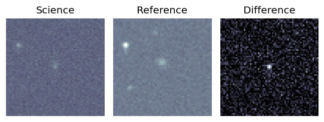
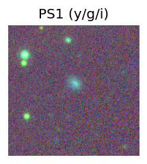
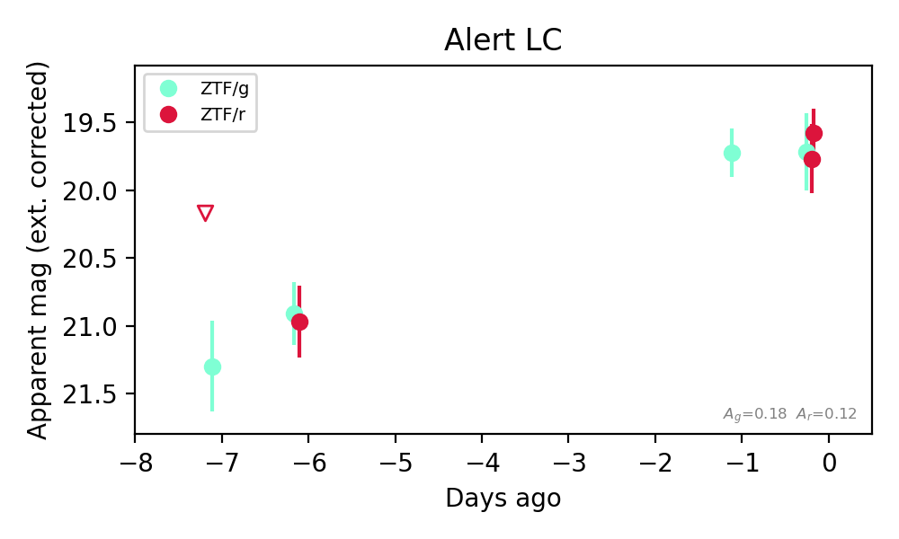

Candidate List 20261025Last night — ZTF: 1,050 passed basic cuts (43 young) · LSST: 0 passed basic cuts (0 young)Previous Day Next Day
Section 1: New Sources (age<1d) Section 2: Old (1-5d) sources observed last nightplaceholder
Section 1: New Afterglow/FBOT Cands Last Night (0)
Section 2: Older Sources Observed Last Night (2)
0. [ZTF] ZTF26accttyl (FBOT?) (TNS: AT 2017cgf) [Back to Top] [Share] [Trigger Swift] [Fritz Alert] [Fritz Source] [Lasair]RA, Dec: 127.28506, 48.4441 8h29m8.41s, 48d26m38.77sGalactic (l, b): 171.08515, 35.82722 ext(g-r) = 0.039

TESS: Sectors [20 47 60]
SDSS (<15 kpc):Found SDSS phot-z: z=0.29; peak abs mag = -25.63
PS1: 0 sources in 3 arcsec
LegacySurvey: 1 sources in 3 arcsec Closest: d = 0.07 arcsec, 190.7 deg (east of north) photoz=0.51 (68% bounds 0.36, 0.71), type=PSF peak abs mag (ext. corrected) = -27.11 (68% bounds -26.24, -27.98)

Extinction-corrected gr color:
From alerts: -0.4 +/- 0.04 mag
Rise Rate:
g: 1.03 mag/day
r: 0.79 mag/day
Fade Rate:
g: 0.14 mag/day
1. [ZTF] ZTF26acctuoa (FBOT?) [Back to Top] [Share] [Trigger Swift] [Fritz Alert] [Fritz Source] [Lasair]RA, Dec: 133.0326, 61.19609 8h52m7.82s, 61d11m45.93sGalactic (l, b): 154.82189, 37.9586 ext(g-r) = 0.058

TESS: Sectors [47 60 74]
SDSS (<15 kpc):Found SDSS phot-z: z=0.12; peak abs mag = -19.22
PS1: 0 sources in 3 arcsec
LegacySurvey: 1 sources in 3 arcsec Closest: d = 1.04 arcsec, 52.0 deg (east of north) photoz=0.85 (68% bounds 0.49, 1.13), type=REX peak abs mag (ext. corrected) = -24.14 (68% bounds -22.71, -24.92)

Extinction-corrected gr color:
From alerts: 0.07 +/- 0.32 mag
Consistent with synchrotron, g-r>0!
Rise Rate:
g: 0.23 mag/day
r: 0.22 mag/day
Fade Rate: